CentOSの事情
背景
業務で利用するLinux Serverを新規で作成することになった。
既存のLinux Serverの横に追加することになっているため、追加するサーバのOSも併せようと考えたが、現在CentOSはバージョンアップ方針が変わっており、そのまま採用すべきではないのではないか、となった。
適切なOSを選定するとともに、CentOSの事情を把握しておきたいため、調査する。
CentOSの事情
元々の流れ
CentOSは Red Hat Enterprise Linux（以降RHEL）というディストリビューションの系列に属しており、RHELと機能的に互換性があることを目指したフリーのLinuxディストリビューションである。
RHELに含まれているソフトウェアの中にはOSSで無償公開しているため、これをもとに、商標や商用パッケージをのぞいたものをリビルドして提供している。そのため、「RHELクローン」と呼ばれることもある。(CentOS自体は公式には否定している)
最初期ではRHELを提供するレッドハットは関わっていなかったが、2014年からCentOSを正式に支援していくことを表明していた。
しかし、2020/12/8にCentOSからCentOS Streamに開発の主軸を移動し、CentOS Linux 8のサポートを2021年に停止している。RHEL 9に対応するCentOS Linux 9は提供さず、今後はCentOS Stream 9の提供とする。
Red Hat Enterprise Linux派生ディストリビューション
Red Hat Enterprise Linux派生ディストリビューション
RHELには様々なディストリビューションが存在する。大きくは、まず同社がメンテナを行っているFedora Linuxがある。これは、もともとはRHELの無償版であった。
しかし、Fedoraはサポート期間が比較的短く、実験的なリリース方針であったため、長期サポートを望むユーザとしては利用に適していなかった。
RHELはコンパイル済みのものを無償提供していないが、完全なソースコードを公開しているため、これを入手し再コンパイルすることで派生ディストリビューションの作成が行われている。
CentOSのサポート情報
| Version | 完全更新期限 | メンテナス更新期限 | |
|---|---|---|---|
| 6 | 6.10(最終) | 2017年 Q2 | 2020/11/30 |
| 7 | 7.9-2009(最新) | 2020年 Q4 | 2024/06/30 |
| 8 | 8.5.2111(最終) | 2021年12月 | 2021/12/31 |
CentOS Stream
CentOS StreamはRHELとFedora Linuxの中間を目指したディストリビューション。
Fedoraは実験的なリリースを取り込み、RHELの将来のメジャーリリースのベースとなるアップストリームプロジェクトであったが、CentOS StreamはRHELの次のバージョンとなる変更を取り入れたRHELのプレビューとなる。
このような性質の変更があったため、重要なビジネスアプリケーションやプロダクション環境での使用は推奨されておらずRHELが進められる。

元々のCentOSの性質としては、他のRHELと同様にコードのリビルドから生成されたものであり、個別メンテナンスであったため、今回の変更で性質ががらりと変わる。
やはり商用利用を考えた場合、（本質的にはRHELを使え、なのだが）あまり利用は推奨されるべきものではなくなるという見解があちらこちらで見られた。
派生ディストリビューションについて
CentOSの事情を鑑み（結局ただ乗りになるのだが。。。）、同じ要件をかなえるためのディストリビューションが多数生まれている。
もし、無償版を利用するならばこの中から選定すべきだと考えられる。
Rocky Linux
RHELのソースコードを利用した、完全バイナリ互換性のあるリリースであることを意図しており、コミュニティがサポートする、商業品質の企業向けOSを提供することを目的としている。
背景として、CentOS Streamが発表された後、CentOSの初代創設者である Gregory Kurtzer氏が、元のCentOSの目的を達成するために立ち上げたプロジェクトである。
パートナー企業としては、ArmやVMWare、AWS、Google Cloudなども参加しており、従来のCentOSと同等のもののとなっている様子。
AlmaLinux
AlmaLinux
AlmaLinux OS - Forever-Free Enterprise-Grade Operating System
Rocky Linuxと同様の動機と目的をもって開発されているディストリビューション。
しかし、こちらは、CloudLinux OSというRHELベースの商用Linuxディストリビューションを開発しているCloudLinuxが作成している。
また、このCloudLinuxは、別途AlmaLinux Open Source Foundationという非営利組織を設立し、AlmaLinuxの管理はこの組織に引き継いだ。
Oracle Linux
Oracle社によりRHELの商標やロゴの差し替えを行い、再構築したディストリビューション。
Oracleへのユーザ登録を行うことで無料で利用することが可能。
厳密には、RHELだけではなく、別のLinuxカーネルを含めたディストリビューションであり、Oracleにより一部強化されているため、完全互換ではないとレッドハットが公表している。
しかし、AWSでも選択できるほか、Oracleが提供するOracle Cloudでは標準OSとして利用されるなど実績を持つ。